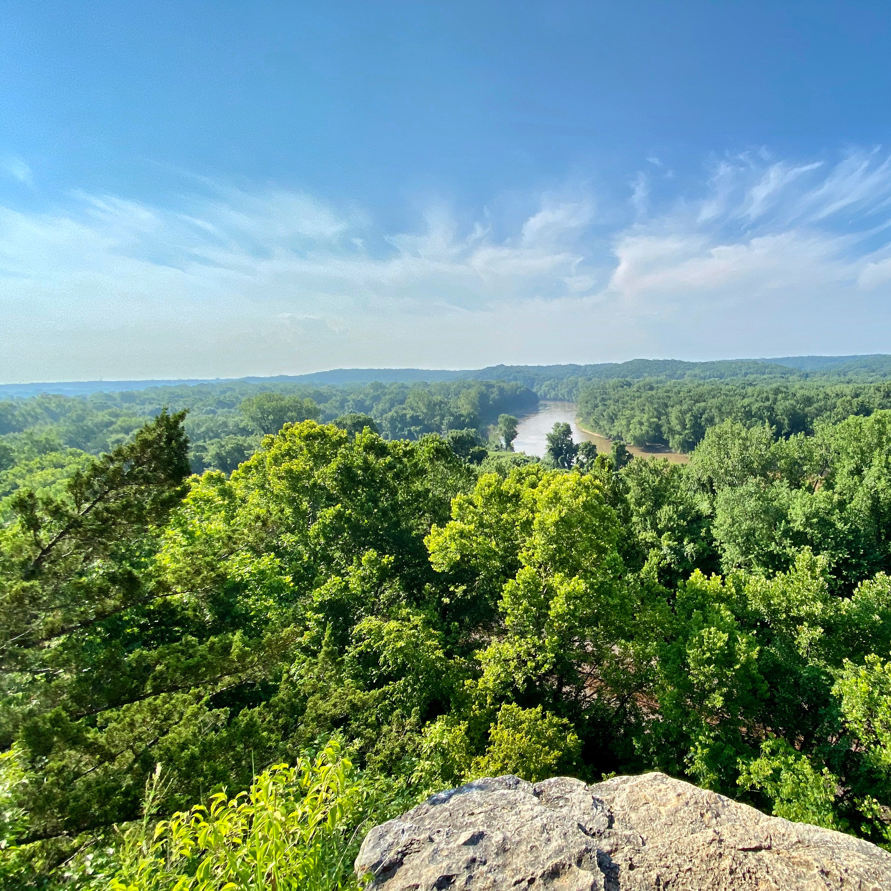
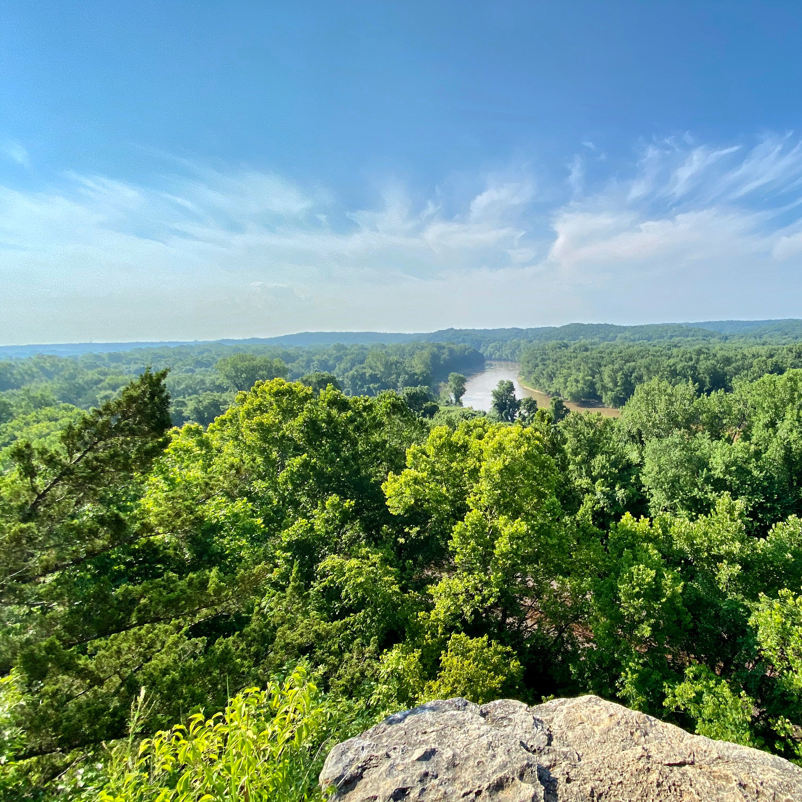
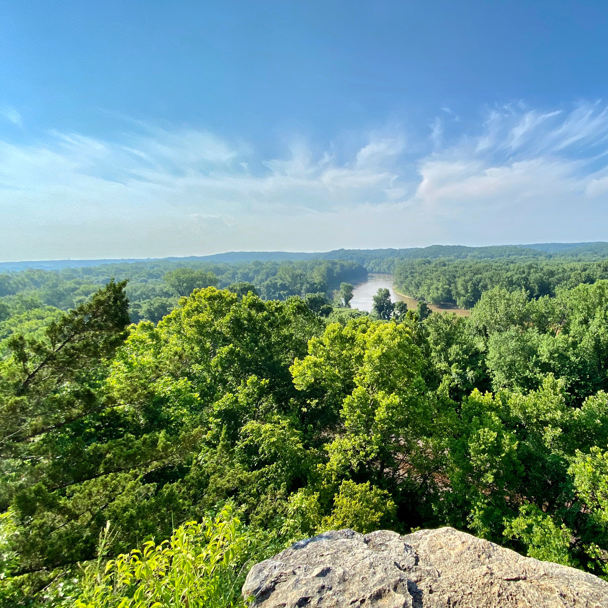
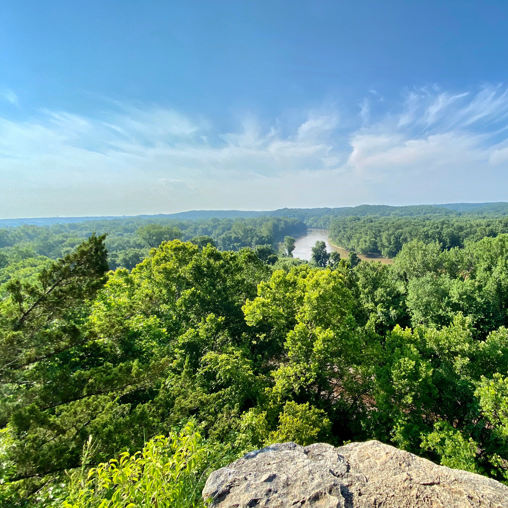

  

Castlewood is probably the most popular spot for hiking close to St. Louis. There are many hiking trails that range in several levels of difficulty. The park was established in 1974. Today is spans over 1,800 acres. It is not uncommon to see wildlife on the trails while hiking. I have personally seen several small ground animals such as chipmunks and squirrels, but have also crossed paths with multiple deer. The best time to go to avoid crowds and to see wildlife is early in the morning, just after the sun rises.


Sculpture park is one of the most visually interesting hiking spot. There are several art installations throughout the park. There is a paved trail that goes around the main grounds. The trail is great for those of all ages and mobility levels. There are also more rugged paths that go into the woods that have hidden art installations throughout. This is a great spot for families or for an afternoon picnic.


Powder Valley is a very calm place to hike. All of their trails are paved paths through the woods. There are 3 different hiking trails for visitors to choose from. Even though the paths are paved, they can get slick after periods of rain. The trails are mostly easy difficulty, but there are areas of steep inclines on each trail.